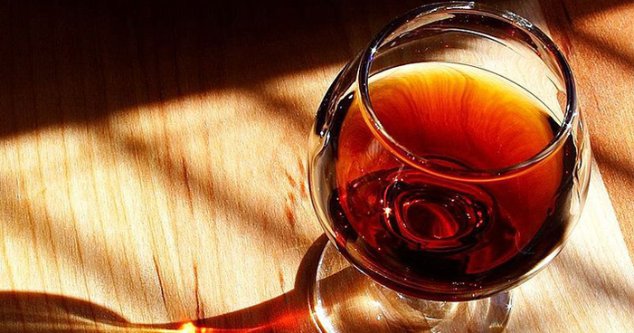

Tipos de Vinhos
Vinho Tinto
Feito com uvas escuras ou tintas, o vinho tinto é geralmente mais encorpado e possui sabores mais intensos.
Vinho Branco

Feito com uvas claras ou brancas, o vinho branco geralmente é mais leve e refrescante do que o vinho tinto.
Vinho Rosé
Feito com uvas tintas, mas com pouco contato com as cascas, o vinho rosé geralmente é mais leve do que o vinho tinto, mas tem mais corpo do que o vinho branco.
Vinho Espumante
Geralmente associado ao champanhe, o vinho espumante é carbonatado e pode ser feito em diferentes estilos, como brut, seco ou doce.
Vinho Fortificado

Este tipo de vinho é enriquecido com aguardente, o que aumenta seu teor alcoólico e o torna mais doce e aromático. O Porto e o Xerez são exemplos de vinhos fortificados.